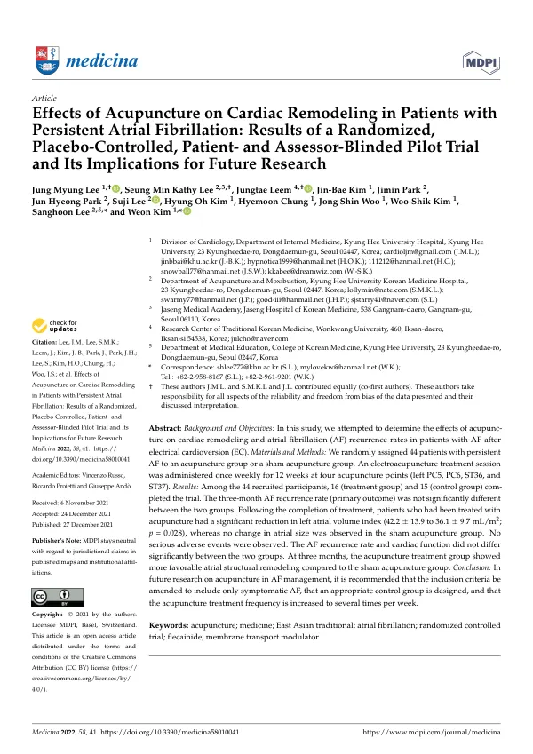

Effects of Acupuncture on Cardiac Remodeling in Patients with Persistent Atrial Fibrillation: Results of a Randomized, Placebo-Controlled, Patient- and Assessor-Blinded Pilot Trial and Its Implications for Future Research
Lee JM, Lee SMK, Leem J, Kim JB, Park J, Park JH, Lee S, Kim HO, Chung H, Woo JS, Kim WS, Lee S, Kim W
Medicina 58(1):41

첫 장 · 오픈액세스First page · open access
논문 소개Summary
심방세동은 가장 흔한 부정맥이고 심장성 색전 뇌졸중의 가장 잦은 원인입니다. 약이 듣지 않으면 전기적 심율동전환으로 정상 리듬을 되돌리지만, 되돌린 뒤 재발을 막는 항부정맥제의 힘은 약합니다. 침이 자율신경 긴장도를 조절해 부정맥에 도움이 될 수 있다는 보고가 있었으나, 앞선 연구들은 대부분 발작성 심방세동을 대상으로 삼았고 눈가림을 하지 않았으며 심장 기능을 재지 않았습니다.
경희대학교병원에서 진행한 단일기관 무작위 배정, 샴 대조, 참여자·평가자 눈가림 파일럿 시험입니다. 플레카이니드 2주에 반응하지 않은 지속성 심방세동 환자 44명을 침군과 샴군에 1대 1로 나누었습니다. 심율동전환 2주 전부터 시작해 이후 10주까지 주 1회, 좌측 내관·극문과 우측 족삼리·상거허에 2헤르츠 전침을 20분 놓고 신문과 이혈 신문에 피내침을 붙였습니다. 샴군은 진짜 혈에서 1.5~2센티미터 떨어진 자리에 0.5센티미터만 얕게 찌르고 전류를 흘리지 않았습니다. 일차 평가변수는 심율동전환 3개월 뒤 48시간 홀터로 확인한 심방세동 재발률입니다.
최종 분석에 침군 16명, 샴군 15명이 들어갔습니다. 일차 평가변수인 재발률은 침군 12명, 샴군 9명으로 두 군의 차이가 없었습니다. 반면 좌심방 용적지수는 침군에서 42.2에서 36.1 mL/m2 로 유의하게 줄었고 샴군은 38.1에서 36.9로 변화가 없었습니다. 이상반응과 중대 이상반응은 어느 군에서도 없었습니다.
저자들은 일차 평가변수가 음성이었다는 것을 감추지 않고 왜 그랬는지를 따집니다. 표본이 작아 검정력이 모자랐을 수 있고 침 처방 자체가 효과가 없었을 수도 있습니다. 모집이 어려워 계획한 인원을 채우지 못한 채 연구비 기한에 맞춰 서둘러 마감했고, 기저에서 침군이 더 고령이고 뇌졸중 위험점수도 높았습니다. 추적은 3개월뿐이었습니다.
그래서 이 논문의 제목에는 결과와 함께 「향후 연구를 위한 함의」가 붙어 있습니다. 저자들은 증상이 있는 심방세동으로 대상을 좁히고, 대조군을 다시 설계하며, 치료 빈도를 주 1회보다 늘리라고 적었습니다. 짧은 추적과 작은 표본을 메우기 위해 건강보험 청구자료를 쓴 전국 코호트를 따로 계획했다는 것도 밝혔습니다. 하나 덧붙이면 본문은 침군 재발을 「16명 중 12명(80%)」이라 적었으나 표에는 75.0%로 되어 있어 원문 안에서 어긋납니다.
Atrial fibrillation is the most prevalent cardiac arrhythmia and the most frequent cause of cardioembolic stroke. When drugs fail, electrical cardioversion restores sinus rhythm — but antiarrhythmic drugs do little to prevent recurrence afterwards. Reports had suggested acupuncture might help arrhythmia by modulating autonomic tone, yet earlier studies mostly enrolled paroxysmal atrial fibrillation, were not blinded, and did not measure cardiac function.
This was a single-centre, randomised, sham-controlled, participant- and assessor-blinded pilot trial at Kyung Hee University Hospital. Forty-four patients with persistent atrial fibrillation refractory to two weeks of flecainide were allocated 1:1 to acupuncture or sham. Treatment began two weeks before cardioversion and continued weekly for ten weeks after it: 2 Hz electroacupuncture for 20 minutes at left PC5 and PC6 and right ST36 and ST37, with intradermal needles at HT7 and the auricular shenmen point. The sham group received needling 1.5 to 2 cm away from the true points at a depth of 0.5 cm, with no current. The primary outcome was atrial fibrillation recurrence three months after cardioversion, confirmed by 48-hour Holter monitoring.
Sixteen patients in the acupuncture group and fifteen in the sham group entered the final analysis. The primary outcome showed no difference: recurrence in 12 and 9 patients respectively. The left atrial volume index, however, fell significantly in the acupuncture group from 42.2 to 36.1 mL/m2, while the sham group changed little, from 38.1 to 36.9. No adverse or serious adverse events occurred in either group.
The authors do not conceal the negative primary outcome; they interrogate it. The small sample may have left the study underpowered, or the acupuncture regimen may simply not have worked. Recruitment proved difficult and had to be closed early against the funding deadline, and at baseline the acupuncture group was older and carried a higher stroke risk score. Follow-up ran only three months.
Hence the title carries "implications for future research" alongside the results. The authors recommend narrowing eligibility to symptomatic atrial fibrillation, redesigning the control group, and treating more often than once a week. They also record that a nationwide cohort using health insurance claims was planned separately, to compensate for the short follow-up and small sample. One inconsistency should be noted: the text reports recurrence as 12 of 16 patients (80%), while the table gives 75.0%.
인용Cite
Lee JM, Lee SMK, Leem J, Kim JB, Park J, Park JH, Lee S, Kim HO, Chung H, Woo JS, Kim WS, Lee S, Kim W. Effects of Acupuncture on Cardiac Remodeling in Patients with Persistent Atrial Fibrillation: Results of a Randomized, Placebo-Controlled, Patient- and Assessor-Blinded Pilot Trial and Its Implications for Future Research. Medicina. 2021;58(1):41. doi:10.3390/medicina58010041